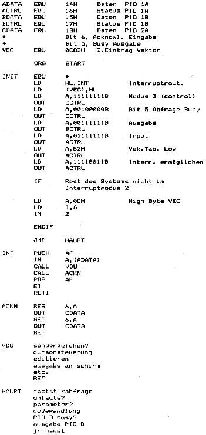

80-Bus Journal |
September 1983 · Ausgabe 9 |
sogenannter Apple kompatibler Platinen bot sich eine preisgünstige Möglickeit an, wenn man schon vorhandene Nascomteile mit einschließen kann. Die Tastatur des Apple (oder besser die Dekodierung auf der dazu gehörenden Platine) ist nicht sehr attraktiv, man kann auf sie verzichten. Die Verbindung zur Hauptplatine entspricht nämlich einer 7-Bit ASCII Schnittstelle. Hier kann also bequem der Nascom über eine PIO angekoppelt werden. Der Apple erkennt ein anstehendes Zeichen an einer Flanke (steigend oder fallend). Die PIO wird auf Ausgabe gesetzt, die Ausgaberoutine kann so aussehen:
Bit 7 wird als Strobe benutzt. Vor der Ausgabe muß lediglich der Code zur Cursorsteurung geändert werden. Im Originalzustand hat der Apple keine Kleinschrift obwohl sie im Zeichengenerator enthalten ist. Die Monitorroutine wandelt automatisch in Großbuchstaben. Pascal verwendet einen Eingabeteil, der nicht im ROM steht und deshalb leicht geändert werden kann.
Attraktiv ist das Pascalpaket (neben der Unmenge an leicht zu erhaltender Software). Als Laufwerke lassen sich die bereits vorhandenen preiswerten BASF 6106 verwenden. Allerdings braucht man dazu einen anderen Controller HOCO). Probleme können gegenüber den den teuren Originallaufwerken bei Pascal auftreten. Der Zugriff auf einen Sektor nach dem Einschalten des Motors ist kürzer als beim DOS 3.3. Es gibt dazu eine Modifikation auf der Floppyplatine, die aber nicht nötig ist, wenn man den Schreib/Lesekopf ständig aufgesetzt läßt. Dadurch erhöht sich zwar der Verschleiß durch Abrieb der Disketten, dafür verringert sich aber auch das Betriebsgeräusch. Bei dieser Bertiebsweise habe ich nach 3 Jahren einen Ausfall von etwa 2 % , das dürfte tolerabel sein.
Pascal bietet die Möglichkeit, ein externes Terminal zu betreiben, sieht dafür aber eine serielle Schnittstelle vor. Ich verwende aber ein modifiziertes Paralellinterface. Priorität hat die Ausgabe vom Apple. Dies läßt sich durch die Interruptfähigkeit der PIO leicht bewerkstelligen. Das Interface vewendet 8 Bit (es werden aber nur 7 gebraucht), Strobe, ACKN bei der Ausgabe und BUSY bei der Eingabe.
CLD-DOS arbeitet zur Tastaturabfrage mit Interrupts im Modus 2. Die Controllerplatine hat keinen IEI-Eingang, deshalb muß zur Bildung einer „Daisy Chain“ (gibt’s da einen guten deutschen Ausdruck?) die PIO Platine hinter dam Controller liegen. Der Start der Vektortabelle zur Interruptverarbeitung liegt bei der Adresse 0C80H, im Grundzustand besteht sie nur aus einer Eintragung. Als Acknowledge könnte theoretisch der RDY Ausgang der PIO dienen, dieser Puls ist aber für das verwendete Interface etwas zu kurz. Ich verwende deshalb eine Datenleitung mit einer Softwarelösung.
Das Koppelprogramm hat folgende Struktur:
| Seite 24 von 28 |
|---|